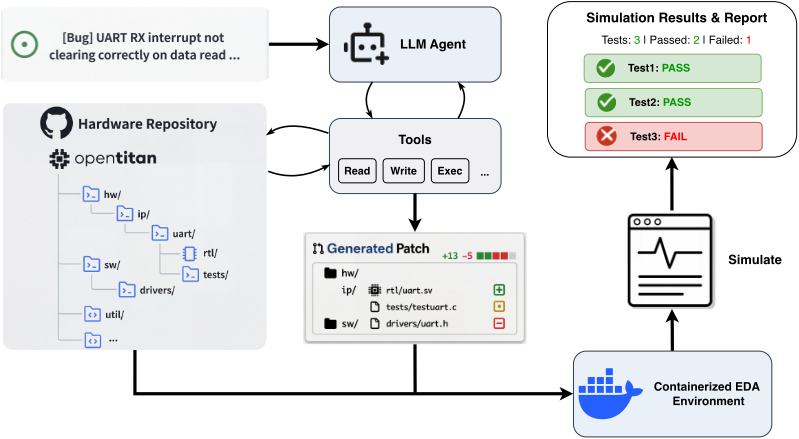
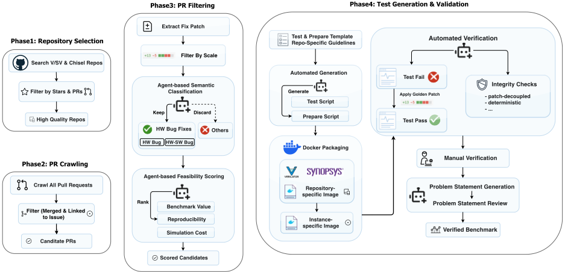
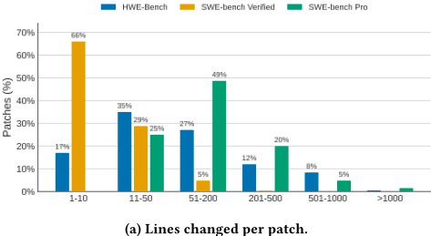
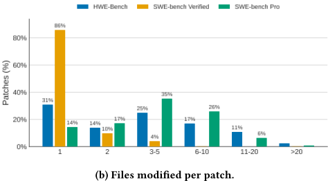
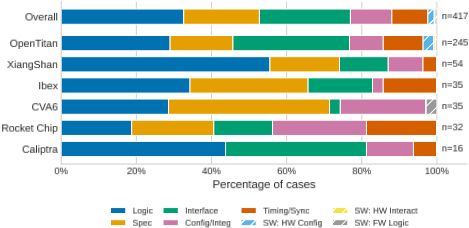
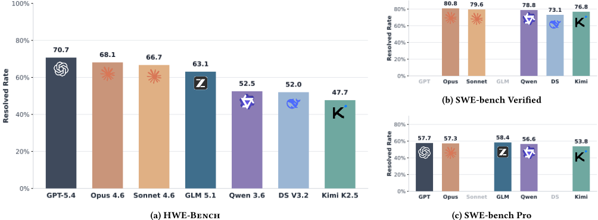

HWE-Bench：面向真实世界硬件缺陷修复任务的 LLM Agent 评测基准
论文针对现有硬件基准只评测组件级 HDL 生成、缺乏仓库级 Agent 评测的问题，提出 HWE-Bench——首个面向真实硬件缺陷修复的仓库级大规模基准。基准从 OpenTitan、XiangShan 等六个开源项目的三万余个 PR 中，经规模过滤、LLM 语义过滤与可行性打分构建出 417 个任务实例，覆盖 Verilog/SystemVerilog 与 Chisel；每个任务在容器化环境中要求 Agent 依据 bug 报告在完整仓库中定位并修复缺陷，通过项目原生仿真回归流程以 FAIL-to-PASS 判定正确性，测试生成与验证管线高度自动化。评测 7 个 LLM 与 4 种 Agent 框架显示：最强组合总体解决率 70.7%，小核项目超 90% 而复杂 SoC 项目低于 65%，且硬件任务上模型间差距（超 23%）远大于软件基准。失败分析将失败归因于故障定位、硬件语义推理与跨工件协调三个阶段，并量化了各模型在 token 消耗、工具调用、缓存命中与成本上的行为差异。
现有硬件设计基准（VerilogEval、RTLLM、CVDP 等）主要评测从自然语言规格生成孤立 HDL 模块的组件级任务，或虽包含 agentic 任务但与项目原生验证环境隔离；硬件领域缺乏类似 SWE-bench 的仓库级、以执行验证为基础的 LLM Agent 评测基础设施。论文要回答的核心问题是：LLM Agent 能否在真实硬件项目的完整上下文中完成仓库级缺陷修复。
构建 HWE-Bench：从六个开源硬件项目（OpenTitan、Caliptra、XiangShan、Ibex、CVA6、Rocket Chip）收集已合并且关联 issue 的 PR，经规模过滤、LLM 分类 Agent 语义过滤与可行性打分保留真实硬件 bug 修复；用统一测试脚本模板加仓库专属指南，由 LLM Agent 自动生成测试与环境准备脚本，打包为 Docker 镜像并经 FAIL-to-PASS 校验、补丁解耦检查、信息泄漏审查与人工复核，得到 417 个实例。评测时 Agent 在容器中接收自包含问题陈述与完整仓库，通过文件读取、编辑、shell 执行等工具产出补丁，由原生仿真回归给出 PASS/FAIL；指标为 Resolved Rate 与 File-Level Precision，并对 7 个模型搭配 4 种 Agent 框架（Claude Code、Codex CLI、Kimi CLI、OpenHands）进行失败轨迹与行为统计分析。
GPT-5.4 xhigh（Codex CLI）总体解决率最高 70.7%，Claude Opus 4.6 为 68.1%、Sonnet 4.6 为 66.7%；开源模型中 GLM 5.1 最高 63.1%，Kimi K2.5 最低 47.7%
较小仓库（CVA6、Ibex、Caliptra）上最强模型解决率超 90%，OpenTitan 与 XiangShan 上下降 20-30 个百分点；Rocket Chip 仅 47K LoC 仍属困难档（62.5%），难度由项目 scope 与 bug 类型分布而非代码量决定
417 个案例中 45 个（10.8%）所有模型均未解决，通常涉及深层协议语义与跨模块协调
同一批模型在 SWE-bench Verified 上差距不足 8%，在 HWE-Bench 上扩大到超过 23%，硬件任务更能暴露模型能力差异
File-Level Precision：Claude Opus 4.6 最高 0.928，GPT-5.4 解决率最高但精度最低 0.619，其额外修改是语义相关但不在 ground-truth 补丁中的真实仓库文件
单任务成本从 $0.10（DeepSeek V3.2）到 $1.81（GPT-5.4 xhigh）；Claude 模型 token 用量低且缓存命中率 99.7%；GPT-5.4 平均每任务 4.2M 输入 token、77.7 次工具调用，Sonnet 为 714K token、18.6 次工具调用
相对已有工作：VerilogEval/RTLLM 限于组件级生成，CVDP 虽扩展到验证/调试/agentic 格式但任务为问题级、Agent 不操作原始仓库与原生回归流程，HWFixBench 提供文件级输入并用 LLM 语义匹配而非执行验证。HWE-Bench 首次将 SWE-bench 式的仓库级、执行验证评测范式引入硬件：任务嵌入完整仓库，补丁通过容器化原生仿真验证，并需处理异构 EDA 工具链与非标准化验证流程；构建管线高度自动化（LLM 过滤、自动测试生成、防泄漏审查），可高效扩展到新仓库。
相关度级别：high
命中能力域：3.5 评测与可靠使用 | 3.3 Agent 架构与工具使用
理由：虽然论文应用领域是硬件（RTL/HDL）缺陷修复，与团队业务场景不同，但其核心贡献直接命中团队能力域。对 3.5：论文提供了完整的仓库级、执行验证的 Agent 评测方法论（容器化环境、自动测试生成、FAIL-to-PASS 校验、问题陈述防泄漏审查），以及跨模型/跨 harness 的成本-效果实证研究，正是团队'产出质量与可靠性评测保障'所需的基础设施参考。对 3.3：论文对比了 Claude Code、Codex CLI、Kimi CLI、OpenHands 四种 harness，量化了不同调试策略（静态分析 vs 终端密集探索 vs grep-first）对解决率、token 消耗、工具调用次数与缓存命中的影响，失败分析（在症状处而非根因处编辑、跨工件/生成代码未同步更新）可直接指导团队代码 Agent 的 harness 设计与上下文组织策略。
建议动作：深入精读并做内部分享
arXiv:2604.14709v3 [cs.AI] 2026年5月5日
现有的硬件设计基准测试（benchmark）主要在诸如根据规格说明生成 HDL 模块等孤立的组件级任务上评估大语言模型（LLM），而仓库规模的评估尚未得到解决。我们提出了 HWE-Bench，这是首个用于在真实世界硬件 bug 修复任务上评估 LLM Agent 的大规模、仓库级基准测试。HWE-Bench 包含 417 个任务实例，这些实例源自六个主要开源项目中真实的历史 bug 修复拉取请求，这些项目同时涵盖 Verilog/SystemVerilog 与 Chisel，覆盖 RISC-V 核、片上系统（SoC）以及安全信任根。每个任务都基于一个完全容器化的环境，Agent 必须在其中解决一个真实的 bug 报告，其正确性通过项目原生的仿真和回归流程加以验证。该基准测试通过一个以自动化为主的流水线构建而成，能够高效扩展到新的仓库。我们使用四种 Agent 框架对七个 LLM 进行了评估，发现最佳 Agent 总体上解决了 70.7% 的任务，在较小的核上性能超过 90%，但在复杂的 SoC 级项目上则降至 65% 以下。我们观察到模型之间的性能差距大于软件基准测试中通常报告的水平，且任务难度由项目范围和 bug 类型分布所驱动，而非仅由代码规模决定。我们的失败分析将 Agent 的失败追溯到调试过程的三个阶段：故障定位、硬件语义推理，以及跨寄存器传输级（RTL）、配置和验证组件的跨工件协同，为开发能力更强的硬件感知 Agent 提供了具体方向。
大语言模型（LLMs）在硬件设计与电子设计自动化（EDA）领域的潜力正日益受到关注 [19]。VerilogEval [11] 和 RTLLM [14] 等现有基准测试（benchmark）推动了 RTLCoder [12]、CodeV [26] 和 OriGen [5] 等面向硬件的模型的进展，但它们主要聚焦于从自然语言规格说明生成组件级代码。CVDP [20] 将范围从生成扩展到验证、调试与 Agent 式交互，但其任务是与项目评估环境相隔离的独立设计问题。该基准测试通过一条系统化且大部分自动化的流水线构建，从仓库噪声中筛选出真实的硬件 bug 修复，并为每个实例建立可复现的容器化验证。
∗ 通讯作者。

我们使用四种 Agent 框架，在全部六个仓库上评估了七个 LLM，既包括专有模型也包括开源模型。表现最佳的 Agent 取得了 70.7% 的总体解决率，但性能差异相当可观：值得注意的是，我们观察到专有模型与开源模型之间的性能差距大于软件基准测试中通常报告的水平，这表明硬件任务能够暴露出以软件为中心的评估所无法捕捉的能力差异。在各仓库之间，我们观察到清晰的难度梯度，其主要由项目范围和 bug 类型分布所决定，而非仅由代码规模决定，解决率从较小项目上的 90% 以上到最大的 SoC 级项目上的 65% 以下不等。我们的失败分析识别出三种反复出现的失败模式——故障定位、硬件语义推理和跨工件协同，此外还发现了独特的模型特定行为差异以及仓库特定的挑战。
总而言之，我们的贡献如下：
Hardware Engineering Benchmarks. Evaluation of LLMs for hardware has progressed from code generation to broader engineering tasks, as shown in Table 1. Early benchmarks such as VerilogEval [11] and RTLLM [14] focused on generating individual modules from specifications, providing simulation-based correctness checks at the component level. CVDP [20] broadened both the task scope (adding verification, debugging, and agentic formats) and scale (783 problems), while HWFixBench [7] moved toward bug repair using real repository data. However, CVDP tasks are problem-scoped rather than repository-scoped: even in agentic settings, agents do not operate over the original project repository or its native regression flow. HWFixBench provides file-level inputs with LLM-based semantic matching rather than execution-based validation. HWE-Bench addresses both limitations by embedding tasks in full repositories and validating patches through native simulation in containerized environments.
Software Engineering Benchmarks. Repository-level, executiongrounded evaluation was established most visibly in software engineering with SWE-bench [8], which demonstrated that grounding agent evaluation in real GitHub issues with unit-test validation provides a reproducible and scalable evaluation methodology. This paradigm has since been extended to multiple languages and longerhorizon tasks [6, 25], as well as terminal-based workflows [15]. HWE-Bench brings this evaluation paradigm to hardware, but requires fundamentally different infrastructure to handle heterogeneous EDA toolchains and non-standardized verification flows.
Automated RTL Repair. Traditional automated repair tools for hardware, such as CirFix [1] and RTL-Repair [9], also target hardware bug fixing but under a much narrower formulation: they operate on a specific module with a given failing testbench and search for minimal patches that satisfy the provided tests. The task formulation in HWE-Bench is substantially broader: agents receive only a natural-language bug report and the full repository, and must independently localize the fault, navigate the codebase, and invoke project-native build and simulation flows to validate their fix.
| Benchmark | Domain | Level | Task Type | Languages | Verification | Environment |
|---|---|---|---|---|---|---|
| VerilogEval [11] RTLLM [14] HWFixBench [7] CVDP [20] | Hardware Hardware Hardware Hardware | Component Component File Component | Code Generation Code Generation Bug Repair Multi-task | Verilog/SV Verilog/SV Verilog/SV Verilog/SV | Simulation Simulation LLM-as-Judge Simulation | Isolated Isolated Isolated Isolated |
| SWE-bench [8] SWE-bench Pro [6] | Software Software | Repository Repository | Bug Repair Bug Repair | Python Multi-language | Unit Tests Unit Tests | Containerized Containerized |
| HWE-Bench (Ours) | Hardware | Repository | Bug Repair | Verilog/SV + Chisel | Simulation | Containerized |
| Benchmark | Domain | Level | Task Type | Languages | Verification | Environment |
测试生成与验证。与以往可能需要庞大人工标注团队 [25] 的基准测试（benchmark）构建方法相比，我们的一项关键进步是构建了以自动化为主的测试生成与验证流水线。我们定义了一个通用的测试脚本模板，用于标准化接口（包括环境搭建、仿真调用和 PASS/FAIL 输出解析），然后针对每个代码仓库提供仓库专属指南，说明其工具链、验证流程和仿真约定。LLM agent 会为每个候选 PR 生成一个测试脚本和一个环境准备脚本：在项目原生验证基础设施允许时遵循该模板，在不允许时则生成自定义实现。
由此得到的环境被封装为 Docker 镜像：包括一个包含 EDA 工具和项目依赖的仓库级基础镜像，以及应用基线提交、环境补丁和测试脚本的实例专属镜像。随后，每个实例都要经过自动化验证：流水线在基线提交上运行测试（预期 FAIL），应用标准答案补丁后重新运行测试（预期 PASS）。除了这一从 FAIL 到 PASS 的检查之外，验证阶段还确保测试与标准答案补丁的具体实现解耦，从而不会拒绝其他同样正确的修复方案。未通过验证的实例会被迭代修复或予以剔除。所有保留下来的实例随后还要经过人工审查，以发现自动化检查无法可靠检测的问题，例如因错误原因而通过的测试，或存在细微不可复现问题的环境配置。
最后，鉴于已有工作表明原始 issue 描述往往过于非结构化或不够完整，难以支持可靠的评估 [6]，我们使用一个独立的 LLM agent 为每个实例生成一段自包含的问题陈述。由于生成的文本可能无意间泄露原始 issue 中并不存在的修复思路、具体文件路径或仿真命令，一个自动化审查步骤会检查此类信息泄露，同时检查语义完整性以及与测试范围的双向对齐。因此，agent 接收的任务输入是这段生成的问题陈述，而非原始 issue 文本。
3

| Repository | HDL | Design Type | Simulator | Tasks | LoC |
|---|---|---|---|---|---|
| OpenTitan | V/SV | SoC / RoT | VCS | 245 | 1,540K |
| Ibex | V/SV | RISC-V Core | Verilator | 35 | 551K |
| CVA6 | V/SV | RISC-V Core | Verilator | 35 | 403K |
| Caliptra | V/SV | Security RoT | Verilator | 16 | 364K |
| XiangShan | Chisel | OoO Processor | Verilator | 54 | 117K |
| Rocket Chip | Chisel | RISC-V SoC Gen. | Verilator | 32 | 47K |
| Total | 417 |
| Repository | HDL | Design Type | Simulator | Tasks | LoC |
从六个代码仓库中总计超过 30,000 个 pull request 出发，该流程在经过全部过滤、验证与人工审查阶段后，最终产出 417 个经过验证的实例。表 2 汇总了 HWE-Bench 中的六个代码仓库。该基准测试（benchmark）涵盖了一系列设计复杂度，从结构良好的小型处理器核（Ibex、CVA6）到拥有复杂精细验证基础设施的大型项目（OpenTitan、XiangShan）。OpenTitan 贡献的任务份额最大，这既反映了其庞大的 pull request 历史，也反映了其 DV/UVM 验证流程的丰富性；其余五个代码仓库则在 HDL、设计风格和复杂度方面提供了多样性。五个代码仓库使用开源的 Verilator 仿真器，而 OpenTitan 则依靠 Synopsys VCS 来支持其基于 UVM 的验证环境。没有商业许可证的用户可以在基于 Verilator 的子集（417 个任务中的 172 个）上进行评估。
补丁复杂度。图 3 将 HWE-Bench 置于与 SWE-bench Verified [8] 和 SWE-bench Pro [6] 相对照的位置。这一对比颇具启发性：Verified 以小型的单文件修复为主，而 Pro 的分布质量则更多地集中在跨越多个文件的大型补丁上。HWE-Bench 则呈现出截然不同的分布特征。其补丁往往涉及多个文件，且规模明显大于 Verified 中的补丁，表明任务通常需要协同式的编辑，而非局部化的行级修改。与此同时，该分布并非由 Pro 中所见的那种最大规模补丁区间所主导；相反，它集中于中等规模的修改，这类修改需要跨文件推理，同时又不至于退化为少数极端案例。
这一形态与硬件开发实践高度契合。在 RTL 代码仓库中，一次缺陷修复通常会波及设计逻辑、参数化或配置，以及测试平台（testbench）、记分板（scoreboard）或 UVM 基础设施等验证组件。HWE-Bench 直接反映了这一工程结构，从而形成一个在评估 Agent 完成协同式、仓库级硬件修复时既贴近真实又具区分度的 benchmark。
缺陷类别。图 4 展示了 HWE-Bench 中六个代码仓库上缺陷类别的分布。该分类体系按照硬件缺陷的主要失效模式，将其划分为功能逻辑错误、规格偏差、接口与协议违例、时序与同步问题以及配置或集成错误，另设一个规模较小的次要类别，用于收录误用硬件的软件与固件缺陷。该 benchmark 以硬件设计缺陷为主，五类根因类别均有充分体现；其中逻辑错误构成最大的类别，而接口/协议缺陷与时序缺陷——这类并发硬件执行所特有的现象——合计占据了相当大的比例。数量较少的软件/固件案例几乎全部出现在 OpenTitan 中，这反映了其庞大的固件与驱动层。
4



该分布在各代码仓库之间同样存在显著差异。在 CVA6 和 Ibex 中，与规格相关的缺陷占主导地位，这是因为严格遵循 RISC-V ISA 是其首要的正确性判据；而 XiangShan 则以源于其复杂乱序流水线的逻辑错误为主。OpenTitan 呈现出最为多样的分布特征，由于其多 IP 的 SoC 架构，接口缺陷与配置缺陷较为普遍。这种多样性确保 HWE-Bench 能够围绕真实硬件开发中所遇到的各类推理挑战对 Agent 进行评估。
模型。我们评估了七个最先进的大语言模型（LLM），涵盖专有与开源两大系列。专有模型包括 GPT-5.4 [18]（配置为 xhigh 推理强度）、Claude Opus 4.6 [3] 与 Claude Sonnet 4.6 [4]（两者均配置为 high 思考强度）。开源模型包括 GLM 5.1 [24]、Qwen3.6 Plus [21]¹、DeepSeek V3.2 [10] 以及 Kimi K2.5 [22]。
1 Qwen3.6 Plus 是 Qwen3.6 系列的托管旗舰模型，其开放权重变体已宣布但尚未发布；我们将其纳入评估，作为即将推出的开源模型的上界参考。
Agent 框架。每个模型都需要一个 Agent 脚手架来与容器化环境交互并调用 EDA 工具。为了反映这些模型在实际中的使用方式，在官方 CLI 框架可用时，我们将每个模型与其官方 CLI 框架配对：Claude Opus/Sonnet 4.6 搭配 Claude Code [2]，GPT-5.4 搭配 Codex CLI [17]，Kimi K2.5 搭配 Kimi CLI [16]，均通过其附带的 coding-plan 订阅进行访问。其余模型（DeepSeek V3.2、Qwen3.6 Plus、GLM 5.1）则通过直接 API 调用使用 OpenHands [23] 进行评估。²这一设置反映了各模型的主流部署路径；因此，结果应被解读为端到端的 Agent 系统性能，而非孤立的模型能力。
评估协议。每个 Agent 在其容器化环境中独立求解每个任务，统一的执行预算为 6 小时墙钟超时和 500 次迭代。Agent 接收自包含的问题陈述以及完整的仓库上下文，且不会获得任何关于真实补丁（ground-truth patch）的提示。Agent 终止后，评估脚本对其最终补丁运行验证测试，并产生二值的 PASS/FAIL 信号。
指标。我们报告两个互补的指标。解决率（Resolved Rate）衡量端到端成功情况：即 Agent 生成的补丁使验证测试从 FAIL 转变为 PASS 的任务比例。文件级精确率（File-Level Precision）衡量补丁的聚焦程度：即 Agent 所修改的文件同时出现在真实补丁中的比例。高精确率首先反映了准确的故障定位，表明 Agent 识别并修改了正确的文件；其次表明它在求解过程中避免了修改无关文件。
表 3 和图 5 给出了主要评估结果。GPT-5.4 xhigh 以 70.7% 的整体解决率位居最高，其中包括 22 个其他模型均未能解决的用例。Claude Opus 4.6（68.1%）和 Sonnet 4.6（66.7%）紧随其后。在开源模型中，GLM 5.1 以 63.1% 的成绩脱颖而出，紧追专有模型，并大幅领先其余开源模型。排名最高的专有模型与排名最高的开源模型之间的差距较小（7.6%），但随着排名靠后，差距显著拉大，Kimi K2.5 仅为 47.7%。在单个仓库层面，专有模型在较小的仓库（CVA6、Ibex、Caliptra）上已能解决超过 80% 的任务，表明其在结构良好、规模适中的硬件项目上表现出色。与此同时，417 个用例中有 45 个（10.8%）是所有七个模型均未能解决的。这些用例通常涉及深层协议语义与跨模块协调的结合，表明跨抽象层的因果推理是当前缺失的关键能力。
2 Qwen3.6 Plus 拥有官方 CLI 工具 Qwen Code，但在我们的初步对比实验中，其表现明显逊于使用 OpenHands 时的水平；因此我们对该模型采用 OpenHands。
5

| Model | Resolved Rate.OpenTitan (245) | Resolved Rate.Ibex (35) | Resolved Rate.CVA6 (35) | Resolved Rate.Caliptra (16) | Resolved Rate.XiangShan (54) | Resolved Rate.Rocket Chip (32) | Resolved Rate.Overall (417) | Precision |
|---|---|---|---|---|---|---|---|---|
| Proprietary | ||||||||
| GPT-5.4 xhigh (Codex CLI) | 157 (64.1) | 32 (91.4) | 34 (97.1) | 15 (93.8) | 37 (68.5) | 20 (62.5) | 295 (70.7) | 0.619 |
| Claude Opus 4.6 high (Claude Code) | 156 (63.7) | 29 (82.9) | 30 (85.7) | 14 (87.5) | 36 (66.7) | 19 (59.4) | 284 (68.1) | 0.928 |
| Claude Sonnet 4.6 high (Claude Code) | 152 (62.0) | 29 (82.9) | 30 (85.7) | 13 (81.3) | 36 (66.7) | 18 (56.3) | 278 (66.7) | 0.916 |
| Open-Source | ||||||||
| GLM 5.1 (OpenHands) | 152 (62.0) | 26 (74.3) | 28 (80.0) | 11 (68.8) | 29 (53.7) | 17 (53.1) | 263 (63.1) | 0.892 |
| Qwen3.6 Plus (OpenHands) | 118 (48.2) | 22 (62.9) | 30 (85.7) | 9 (56.3) | 25 (46.3) | 15 (46.9) | 219 (52.5) | 0.878 |
| DeepSeek V3.2 (OpenHands) | 116 (47.3) | 22 (62.9) | 24 (68.6) | 13 (81.3) | 28 (51.9) | 14 (43.8) | 217 (52.0) | 0.865 |
| Kimi K2.5 (Kimi CLI) | 106 (43.3) | 19 (54.3) | 28 (80.0) | 10 (62.5) | 22 (40.7) | 14 (43.8) | 199 (47.7) | 0.859 |
| Model | Resolved Rate.OpenTitan (245) | Resolved Rate.Ibex (35) | Resolved Rate.CVA6 (35) | Resolved Rate.Caliptra (16) | Resolved Rate.XiangShan (54) | Resolved Rate.Rocket Chip (32) | Resolved Rate.Overall (417) | Precision |
图 5 还将 HWE-Bench 与 SWE-bench Verified 和 SWE-bench Pro 并列进行了比较。这一比较揭示了两个观察结果。首先，模型性能在硬件任务上分化更为剧烈：在 SWE-bench Verified 上，所有模型都集中在 73% 至 81% 之间，Qwen3.6 Plus 和 Kimi K2.5 等开源模型已逼近专有模型。而在 HWE-Bench 上，同样的模型分别降至 52.5% 和 47.7%，而专有模型仍保持在 66% 以上，性能差距从不足 8% 扩大到超过 23%。SWE-bench Pro 上也出现了类似的压缩现象，各模型同样集中在一个狭窄区间内。GLM 5.1 符合这一趋势：尽管它从 SWE-bench Pro 上的领先位置降至 HWE-Bench 上的第四名，但它仍以 63.1% 领跑开源阵营，并与其余三个开源模型（47-52%）保持明显差距。因此，硬件任务暴露出了在以软件为中心的评估中被压缩的性能差异。其次，没有任何模型在 HWE-Bench 上达到接近饱和的性能，这表明它对当前的 Agent 构成了有意义且持久的挑战。
表 3 中的文件级精确率一列显示，对大多数模型而言，精确率与解决率呈正相关。Claude Opus 4.6 同时取得了最高的精确率（0.928）和第二高的解决率；GLM 5.1 同样在拥有较高解决率的同时保持了良好的精确率（0.892）。较低的精确率可能源于多种原因：故障定位不准确导致对无关模块进行修改、对修复位置附近文件的修改范围过宽，或是对迭代调试过程中产生的中间产物（临时脚本、备份文件）清理不当。
GPT-5.4 xhigh 是这一模式中的一个显著例外：它取得了最高的解决率，但精确率最低（0.619）。为了理解这一现象，我们检查了它生成的补丁和轨迹。这些额外的文件并非工作区噪声，而是仓库中真实存在的附带改动：
6
模板和自动生成的镜像文件、DV 测试基础设施，以及与修复在语义上相关但未出现在真实补丁中的配置文件。这表明 GPT-5.4 对仓库运用了更广泛、系统级的理解，在补丁之外主动更新相关组件，其代价是 diff 的聚焦程度较低。
协调失败。硬件缺陷修复经常需要对多个层次进行协同编辑：RTL 源码、配置文件（例如 OpenTitan 中的 HJSON 寄存器描述）、自动生成的配套产物（collateral）以及验证组件。即使 Agent 产出了正确的 RTL 修复，它们也始终无法将该变更传播到这些相互耦合的产物中，导致验证测试始终处于失败状态。例如，在一个 OpenTitan 外设寄存器接口缺陷上，多个 Agent 正确修复了 RTL 逻辑，却遗漏了相应的 HJSON 寄存器描述和自动生成的镜像（mirror）更新。这一模式在设计与验证产物紧密耦合的代码库中尤为常见，例如 OpenTitan 和 Caliptra，并且代表了一种在标准软件缺陷修复基准测试中较为少见的挑战——在这类基准测试中，修复很少需要对生成代码或声明式配置进行同步编辑。
7
模型特定观察。除了这些共性模式之外，各个模型还表现出由其调试策略塑造的独特失败特征。Claude 系列模型（Opus 和 Sonnet）几乎完全通过静态分析开展工作，很少调用编译或仿真，这使其补丁保持极简且聚焦，但也使其容易受到那些本可由构建-测试循环捕获的语义边缘情况的影响。Opus 和 Sonnet 在表 3 中并列拥有最高的文件级精确率（File-Level Precision），但其最常见的失败模式是对跨模块握手以及仅在运行时才显现的陈旧字段验证不足。GPT-5.4（Codex CLI）是最系统化的探索者，在编辑前执行大量的 rg /shell 扫描和适度的构建探测，以收集广泛的上下文。其失败通常并非源于投入不足，而是源于在看似可靠的定位之后依然存留的隐藏耦合，因此其补丁往往比实际需要的更大。
在开源模型中，GLM 5.1 通过一种以符号为驱动、窄范围阅读并辅以轻量编译检查的风格，取得了出人意料的强劲成绩（总体 63.1%）。然而，其失败的补丁往往瞄准了正确的子系统，却在错误的抽象层次上进行操作。Qwen3.6 Plus 采取 grep 优先的局部化策略；其大多数失败补丁仅触及一个文件，属于不完整的 RTL 手术而非完全的定位错误。然而，当 Qwen 在复杂用例上失去信心时，它会表现出嘈杂的尾部行为，在 OpenTitan 和 Caliptra 上产出过于宽泛的补丁。DeepSeek V3.2 运行最依赖终端的工作流并频繁进行编译检查，这有助于其解决需要迭代完善的用例，但其补丁在所有模型中噪声最大，常常包含宽泛的机械式编辑，却仍错过确切的契约边界（contract edge）。Kimi K2.5 往往过于局限于局部上下文，反复重访同一文件并编辑同一层次，而不退后一步考虑跨模块依赖，这使其在集成与配置类缺陷上尤为薄弱。
仓库特定挑战。除了第 4.3 节讨论的项目范围与缺陷类型因素之外，每个仓库还呈现出各自独特的失败特征。在 XiangShan 上，失败集中在涉及派发/发射元数据、访存单元（LSU）重放时序以及预测器重定向的流水线级边界处，其可见症状往往出现在根因下游一个周期处。在 Ibex 上，剩余的困难案例是架构层面的而非局部的：陷入（trap）处理、控制状态寄存器（CSR）语义以及 LSU 行为需要在控制器、处理器核与寄存器堆之间进行协同修改。CVA6 的失败相对较少，但集中在微妙的缓存控制与内存管理单元（MMU）语义上，在这些场景中 Agent 能找到正确的文件，却应用了错误的常量或缓存状态条件。Caliptra 则将 RTL 缺陷与集成脚手架结合在一起：UVMF 模板、回归测试 YAML 以及生成的配套文件常常需要随 RTL 修复一同更新。
表 4 量化了失败分析中观察到的行为差异。GPT-5.4 xhigh 平均每个任务消耗 4.2M 输入 token 并进行 77.7 次工具调用，这与其系统性的 shell 密集型探索方式一致。Claude 系列模型的开销要低得多：Sonnet 平均消耗 714K 输入 token 并进行 18.6 次工具调用，通过上文所述的静态分析方法实现了相当的解决率。DeepSeek V3.2 消耗 2.6M 输入 token 并进行 56.5 次工具调用，反映了其终端密集型的调试风格。
| Model | Prompt (K) | Compl. (K) | Cache (%) | Tool Calls | Cost ($) |
|---|---|---|---|---|---|
| Proprietary | |||||
| GPT-5.4 xhigh | 4,201 | 22.3 | 95.5 | 77.7 | 1.81 |
| Opus 4.6 high | 756 | 4.9 | 99.7 | 20 | 0.51 |
| Sonnet 4.6 high | 714 | 2.3 | 99.7 | 18.6 | 0.26 |
| Open-Source | |||||
| GLM 5.1 | 1,605 | 15.9 | 97.1 | 40.3 | 0.54 |
| Qwen3.6 Plus | 1,686 | 21.6 | - | 41.1 | 0.5 |
| DeepSeek V3.2 | 2,560 | 24.1 | 97.2 | 56.5 | 0.1 |
| Kimi K2.5 | 1,128 | 8 | 95.6 | 27.7 | 0.16 |
| Model | Prompt (K) | Compl. (K) | Cache (%) | Tool Calls | Cost ($) |
基于官方 API 定价的成本估算从每任务 0.10 美元（DeepSeek V3.2）到 1.81 美元（GPT-5.4 xhigh）不等。尽管开源模型提供了显著更低的单 token 价格，但其更高的 token 消耗抵消了这一优势的大部分：GLM 5.1 和 Qwen3.6 Plus 的成本均在每任务 0.50 美元左右，与 Claude Opus 4.6（0.51 美元）相当，尽管 Opus 的单 token 价格要高出 4-10 倍。Claude 系列模型同时受益于更低的 token 用量和接近完美的缓存命中率（99.7%），后者可能得益于 Claude Code 优化的上下文管理与提示缓存策略。Qwen3.6 Plus 未显示任何缓存利用（在表 4 中标记为 -），这可能是由于其 API 端点配置所致。
我们提出了 HWE-Bench，这是首个用于评估 LLM Agent 在真实世界硬件缺陷修复任务上表现的大规模、仓库级基准测试（benchmark），包含 417 个实例，这些实例源自横跨 Verilog/SystemVerilog 与 Chisel 的六个仓库中真实的历史缺陷修复 pull request，并具备完全容器化、基于执行的评估以及大部分自动化的构建流程，能够高效扩展至新的仓库。我们对七个 LLM 搭配四个 Agent 框架的评估表明，表现最佳的 Agent 总体上可解决 70.7% 的任务，在规模较小的核心上性能超过 90%，但在复杂的 SoC 级项目上则降至 65% 以下；这一差距用项目范围与缺陷类型分布来解释，比仅用代码规模解释更为合理。我们还观察到，模型之间的性能差距大于软件 benchmark 上通常报告的水平。我们的失败分析识别出三种反复出现的失败模式，即故障定位、硬件语义推理与跨工件协调，以及独特的模型特定行为差异和仓库特定挑战。我们相信，HWE-Bench 能够作为衡量并推动 LLM 辅助硬件工程进展的基础。